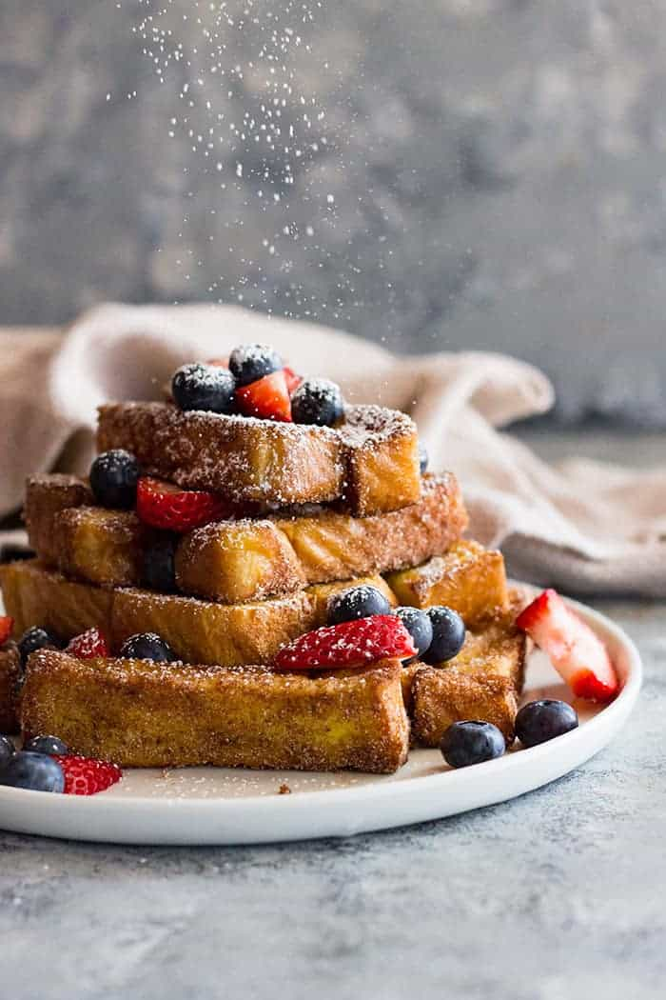

Cinnamon French Toast

Your Family's Favorite Saturday Morning Breakfast
My family loves to endulge in sweet and savory breakfast or bruch treat of cinnamon french toast. It is also one of my favorites as it is quick and easy to make.
Ingredients:
- 8 slices of thick cut bread
- 4 large eggs
- 1/2 cup of milk
- 1 tsp vanilla
- 1/2 cup sugar
- 2 tsp cinnamon
- butter for frying
Steps:
- Cut each slice into 3 equal sticks; set asisde.
- In a large shallow dish combine the eggs, milk, and vanilla; set aside.
- In another shallow dish or plate combine the sugar and cinnamon; set aside.
- Heat a large skillet over medium to medium low heat. Add 2 tablespoons butter to melt. Roll the sticks in the egg mixture (don't let them soak) and add to skillet (be careful not to overcrowd the pan. Fry until golden on each side
- Remove sticks from skillet and immediately roll in the cinnamon sugar mixture. Serve immediately.